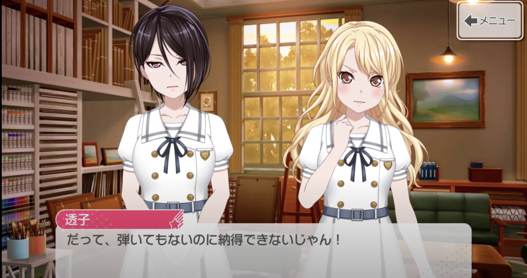
Morfonica is one of the main bands of the BanG Dream! Franchise and is one of the 4 live bands, being the most recently formed.
They are deemed as a symphonic rock (violin rock) band. The band name is a combination
of the two words "Morpho", meaning "change", and "Symphonic", meaning "harmony of sound". The in-universe members of the band are as follows:
Kurata Mashiro (Vocalist), Kirigaya Touko (Guitarist), Hiromachi Nanami (Bassist), Futaba Tsukushi (Drummer), and Yashio Rui (Violinist). They are
all 1st year high school students from Tsukinomori Girls' Academy, which is regarded as a prestigious school with individuals who excel in
every aspect.
Morfonica was added to BanG Dream! Girls Band Party on March 15, 2020 for JP servers and the following year for EN servers.
The 2 in-game band stories (only 1 so far in EN servers) "Morfonica, To The Sparkling World" and "fly with the night" sum up to
35 chapters.
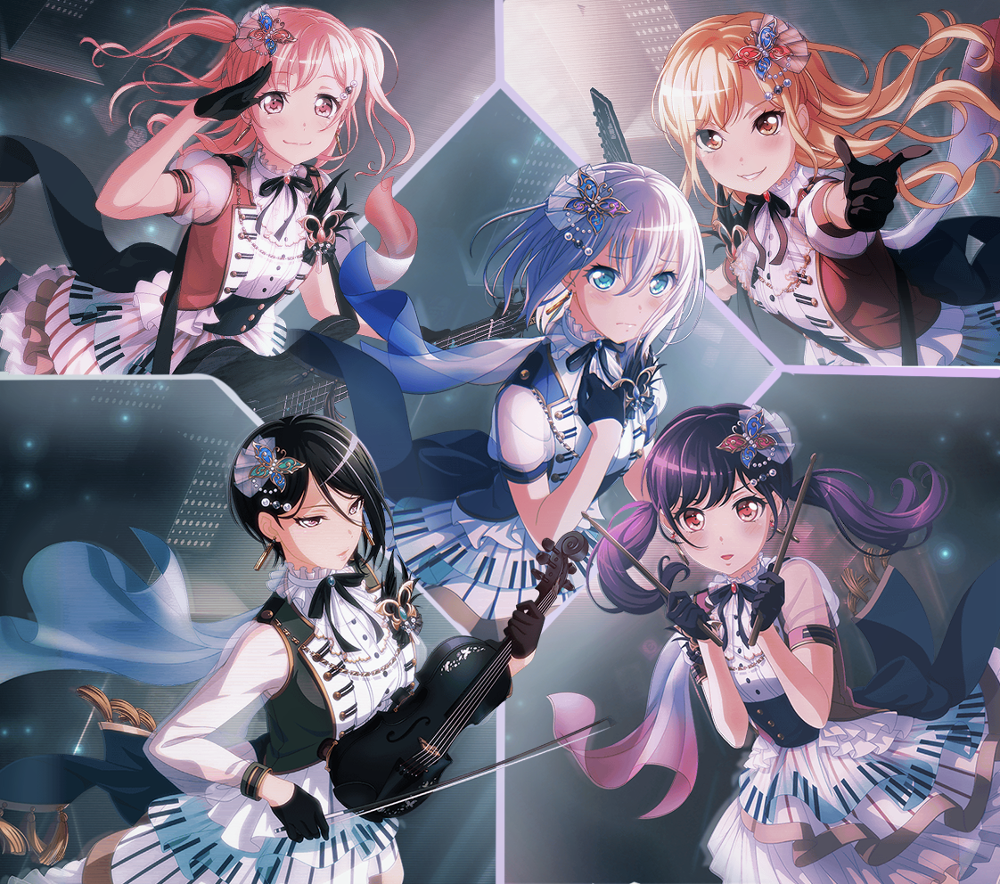
MEDIA
Morfonica wasn't featured in any season of the anime, however they are featured in the 3rd season of Garupa Pico "BanG Dream! GARUPA☆PICO Fever!".
Mashiro, along with the vocalists of the other bands, was one of the singers for the theme song of the season.
They were also featured in BanG Dream! FILM LIVE 2nd Stage, along with the other 6 bands.
MEMBERS / CHARACTERS
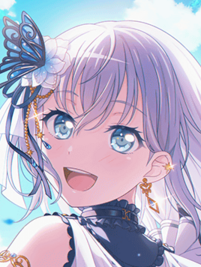
Class: 1-A Birthday: February 19 Height: 154cm
Kurata Mashiro (倉田 ましろ)
Kurata Mashiro is the vocalist and lyricist of Morfonica. She is shy and quiet, yet kind, reserved, and imaginative. She is quite pessimistic and is afraid
of interacting with strangers caused by her fear of giving a bad impression of herself.
She is a 1st year high school student at Tsukinomori Girls' Academy, as well as the other members of the band. She is classmates with Tsukushi. Her
epithet is "Full Speed Astern!".
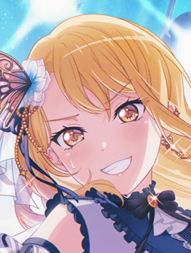
Class: 1-B Birthday: December 16 Height: 164cm
Kirigaya Touko (桐ヶ谷 透子)
Kirigaya Touko is the guitarist of Morfonica, as well as the band's costume designer. She is a social media influencer, making her
quite a famous personality. She is a lively and zestful girl. She also talks in "gyaru" slang and follows "gyaru" fashion.
She is classmates with Nanami. Her epithet is "I'm Awesome the World Over".
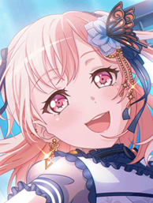
Class: 1-B Birthday: June 16 Height: 157cm
Hiromachi Nanami (広町 七深)
Hiromachi Nanami is Morfonica's bassist. She is a somewhat peculiar girl who always wonders if her words or actions are "normal" and she
definitely doesn't like standing out. Although, she is smart, talented, and artistic.
She is classmates with Touko. Her epithet is "Did I Say Something Weird?".
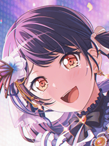
Class: 1-A Birthday: September 15 Height: 150cm
Futaba Tsukushi (二葉 つくし)
Futaba Tsukushi is the drummer of Morfonica. She is confident and resolute but can be clumsy and stubborn, too.
She is classmates with Mashiro and is the class president. Her epithet is "Reach for It Girl".
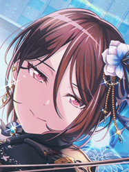
Class: 1-C Birthday: November 19 Height: 169cm
Yashio Rui (八潮 瑠唯)
Yashio Rui is the violinist and composer of Morfonica. She is talented and always strives for the top. Her personality is rather dry,
and she can be blunt about her opinions. She is seen as someone who is realistic and rational.
Her epithet is "Be Rational Bomber".
VOICE ACTRESSES / SEIYUUS (LIVE BAND)
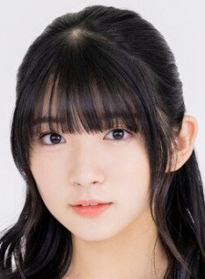
Nickname: Amanesu Age: 17 Height: 163cm
Shindou Amane (進藤 あまね)
Shindou Amane, or Amanesu, voices Kurata Mashiro and is the vocalist of Morfonica. She was born on April 20, 2004. She
wanted to become a voice actress in 2nd grade. She was then scouted by HiBiKi in 2018 wihch was the year she also debuted. Amanesu
plays guitar, sings, dances, and plays games. Prior to casting Mashiro, she was a hardcore BanG Dream! and Pastel*Palettes fan.
She is affiliated with HiBiKi.
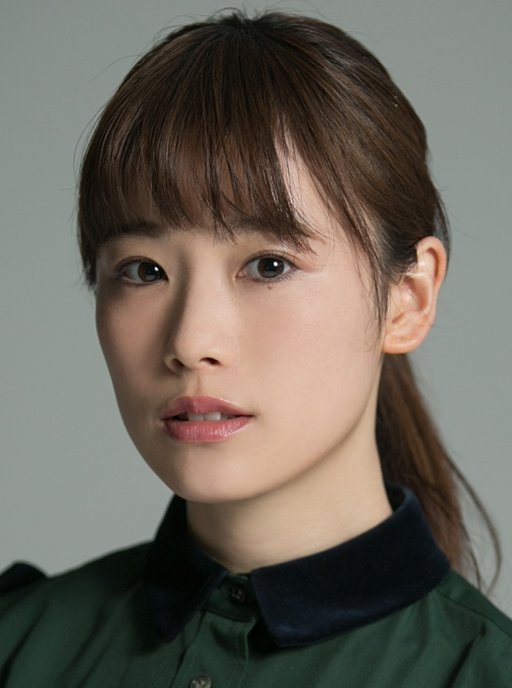
Nickname: Hinamaru Age: 26 Height: 153cm
Suguta Hina (直田 姫奈)
Suguta Hina, or Hinamaru, voices Kirigaya Touko and is the guitarist of Morfonica. She was born on April 17, 1995. She was a nursery teacher
who decided to become a seiyuu. Her hobbies include singing, hair styling, and playing the guitar. Her favorite character in the franchise is
Uehara Himari from Afterglow.
She is affiliated with Animo Produce.
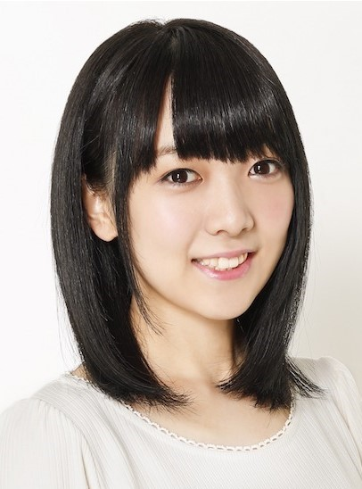
Nickname: Oyu Age: 27 Height: 153cm
Nishio Yuka (西尾 夕香)
Nishio Yuka, or Oyu, is the bassist of Morfonica who also voices Hiromachi Nanami. She was born on March 31, 1994. She played the violin when
she was a kid and later on realized she likes singing. In 2016, she debuted with the single "Eien no Kotae" and later on became a seiyuu under HiBiKi
in 2019. Her skills and hobbies are: playing violin, calligraphy, singing, mahjong, horse racing, playing games, watching anime, handicrafts, and fishing.
She is affiliated with HiBiKi.
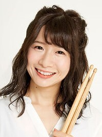
Nickname: mika Age: ? Height: 147cm
mika (ミカ)
mika voices Futaba Tsukushi and is also the drummer of Morfonica. She has been a drummer since she was 16.
Tsukushi is her very first voice acting role, however she has been a support artist
for all live bands and was the former drum instructor of Sakuragawa Megu (Roselia) and Ohashi Ayaka (Poppin' Party).
She is under Ace Crew Entertainment.
Nickname: Ayasa Age: 30 Height: 168cm
Shimamura Ayasa (島村 絢沙)
Shimamura Ayasa, or just Ayasa, voices Yashio Rui and is the violinist of Morfonica. She was born on October 19, 1991. Just like mika,
her current role in the BanG! Dream Franchise is also her first voice acting role. She has been playing violin since the age of 3. She likes anime with
her favorite being Inuyasha.
She is affiliated with Ace Crew Entertainment and signed under JUGGLER.
DISCOGRAPHY
ORIGINAL SONGS:
Currently having 9 original songs, Morfonica is yet to release their 1st album.
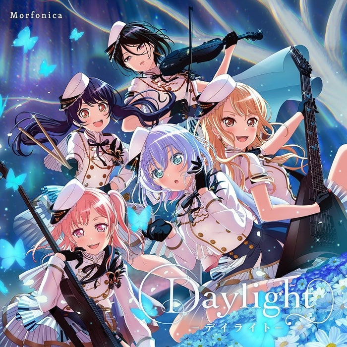
Bloom Bloom
Daylight
Fateful...
Flame of hope
Fly with the night
Harmony Day
Konjiki e no Prelude
Secret Dawn
Sonorous
Morfonica - Bloom Bloom
Morfonica - Daylight
COVER SONGS:
Morfonica currently has 10 cover songs.
Agehachou
Byoushin wo Kamu
ChAngE
Colorful Box
CQCQ
LEVEL5-judgelight-
Melissa
Nevereverland
Shinkai Shoujo
V.I.P
Nano - Nevereverland
(covered by Morfonica)
COLLAB SONGS (with Other Bands):
Original:
Cover:
Kizunairo no Ensemble
PICOtarumono, FEVER!
Moonlight Densetsu
S'il Vous President
DALI - Moonlight Densetsu
(covered by Pastel*Palettes feat. Tsurumaki Kokoro & Kurata Mashiro)
LIVE PERFORMANCES
Being the youngest band in the franchise, Morfonica has only held 6 lives with their first being in 2020. They have
2 upcoming lives on April and June 2022.
PAST PERFORMANCES:
Special Live ~Summerly Tone♪~ (August 23, 2020)
Cantabile (October 7, 2020)
Astral Harmony - with Poppin' Party (February 23, 2021)
Andante (May 21, 2021)
Mythology - with RAISE A SUILEN (September 4-5, 2021)
Morfonica ZEPP TOUR 2021 "Amabile" (October 28 & November 5, 2021)